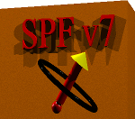

DMRG++ is a free and open source implementation of the DMRG algorithm. It emphasizes generic programming using C++ templates, friendly user-interface, and as few software dependencies as possible. DMRG++ tries to make writing new models and geometries easy, fast and bug-free by using a generic DMRG engine. This is available here.
SpinGlassSW is a free and open source spin-wave code that focuses on strongly disordered magnets, and is co-authored by Tom Berlijn at ORNL.
A code to compute properties of tight binding models, when there's only one-particle interactions. This is at github.com.
 The SPF project is designed for the computer simulation of generic fermionic systems coupled to classical fields. These models have become very important in the description of many physical systems of much current interest in condensed matter theory, e.g. manganites, diluted magnetic semiconductors and high temperature superconductors. In fact, spin-fermion models comprise a large set of models, including not only spin degrees of freedom, but orbital as well as lattice distortions or phonons, where the applicability to a growing number of materials has been found to be effective.
PsimagLite is a fork of T.S.'s Psimag software that includes only a subset of functionality found in the full Psimag.